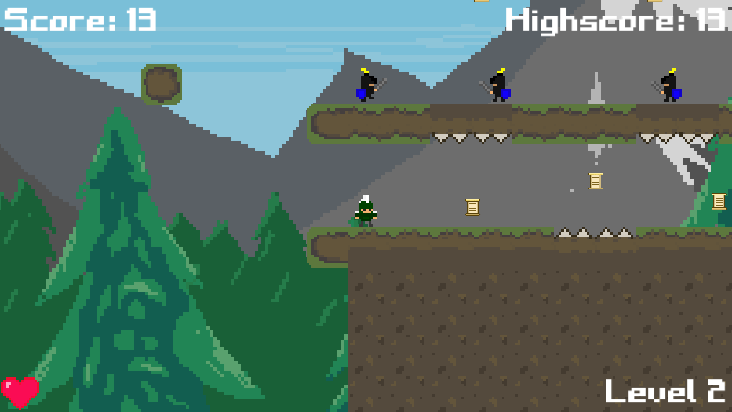

Created by Ekaterina Shevelina
Game Description:
You need to help young Theo with his lessons. He is a good student but he loves sleeping too much. Explore his great drems world, collect scrolls of knowledge, avoid enemies, and pass all tests!
Game Modifications:
Game was created on course "Game Development for Modern Platforms" with using it's materials.
© Michigan State University. All Rights Reserved.